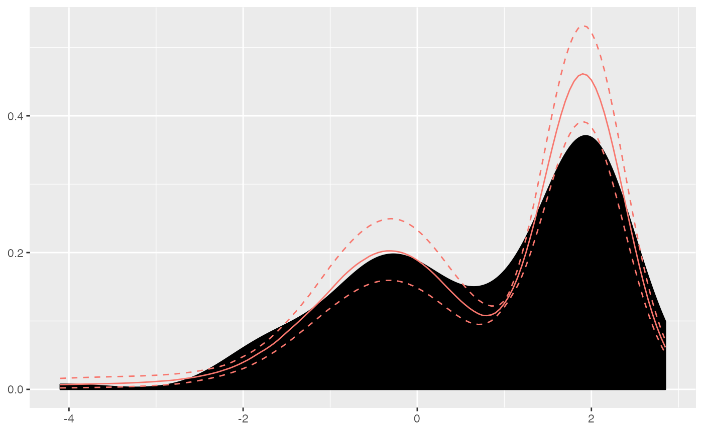
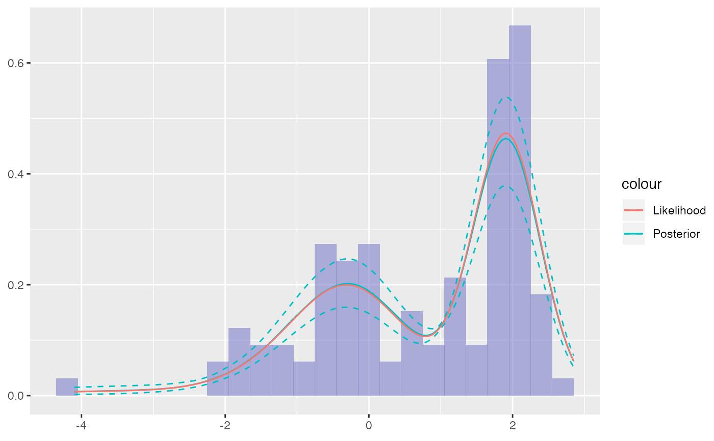

R/plot.R, R/plot_dirichletprocess.R
plot.dirichletprocess.RdFor a univariate Dirichlet process plot the density of the data with the posterior distribution and credible intervals overlayed. For multivariate data the first two columns of the data are plotted with the data points coloured by their cluster labels. The additional arguments are not used for multivariate data.
# S3 method for dirichletprocess plot(x, ...) plot_dirichletprocess_univariate(x, likelihood = FALSE, single = TRUE, data_fill = "black", data_method = "density", data_bw = NULL, ci_size = 0.05, xgrid_pts = 100, quant_pts = 100, xlim = NA) plot_dirichletprocess_multivariate(x)
| x | Dirichlet Process Object to plot |
|---|---|
| ... | Further arguments, currently ignored. |
| likelihood | Logical, indicating whether to plot the likelihood from the dpobj. |
| single | Logical, indicating whether to draw the posterior from the last iteration or use the full cluster sequence. |
| data_fill | Passed to `fill` in the data geom, for example a color. Defaults to "black". |
| data_method | A string containing either "density" (default), "hist"/"histogram", or "none". Data is plotted according to this method. |
| data_bw | Bandwith to be passed either as the binwidth of
|
| ci_size | Numeric, the interval size to use. Defaults to .05. |
| xgrid_pts | Integer, the number of points on the x-axis to evaluate. |
| quant_pts | Integer, the number of posterior functions to use to obtain the posterior and its interval. |
| xlim | Default NA. If a vector of length two, the limits on the x-axis
of the plot. If |
A ggplot object.
